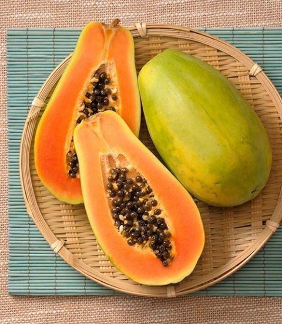

Papaya Cultivation Guide

1. Climate & Soil
Prefers warm, humid climate; frost-free areas are ideal.
Well-drained sandy loam soil with pH 6.0–6.5 is best.
2. Land Preparation & Planting
Deep plowing followed by harrowing and leveling.
Spacing: 1.8 m x 1.8 m (approx. 1,200 plants/acre).
Planting season: June–July or February–March.
Use hybrid varieties like Red Lady for high yield.
3. Irrigation
Water every 7–10 days depending on soil and climate.
Drip irrigation is highly effective.
4. Fertilizer Schedule
FYM: 10–15 kg per plant/year.
NPK: 400g N, 250g P, 300g K per plant/year in 4 splits.
5. Pest & Disease Management
Pests:
Aphids, mealybugs – control with neem oil or insecticides.
Diseases:
Mosaic virus, anthracnose – remove infected plants, use fungicides.
6. Investment Breakdown (Per Acre)
Input
Estimated Cost (INR)
Seedlings
₹10,000 – ₹12,000
Fertilizers & Manures
₹6,000 – ₹8,000
Plant Protection
₹2,000 – ₹3,000
Irrigation Setup
₹6,000 – ₹10,000
Total Investment
₹24,000 – ₹33,000 per acre
7. Yield & Harvesting
First harvest in 6–8 months after planting.
Yield: 30–40 tons per acre annually.
8. Market Rate & Profit
Average price: ₹8 – ₹20 per kg.
Gross income: ₹2,40,000 – ₹8,00,000 per acre.
Net profit: ₹2,00,000 – ₹7,50,000 per acre.